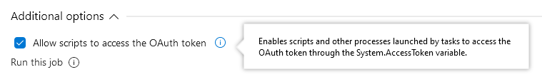
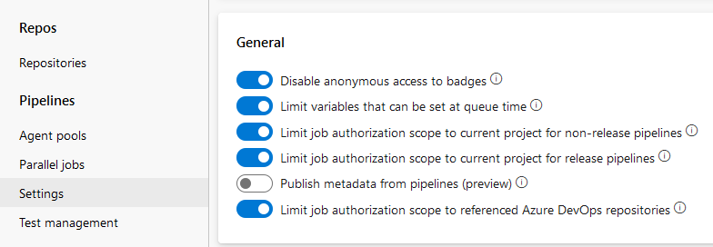

One of the new YAML pipeline steps I prepared recently involved interaction with work items. I wanted to add the comments to the task (with the task ID extracted from some file). So, I created a PowerShell step that was executing Invoke-WebRequest (with try/catch logic, obviously), the process finished successfully, but nothing happened. I mean - the comments were not there. Uhmmmm, why?! The log analysis gave me a slight hint about what was wrong (as seen in the post header picture):
StatusCode : 203
StatusDescription : NonAuthoritativeInformation
The problem began because I wanted to adjust the code from the other pipeline that would fit my needs, but it didn’t want to work in my project. I googled for the answers, fiddled with tokens, authorization headers, setting pipeline options and variables - nothing helped. I got even more errors and problems. I had to take one step back to go two steps forward.
To better understand the problem I created a two brand new separate Azure DevOps projects and built two pipelines: one using the classic interface, the second using YAML. Also, I made the testing easier and I just read all the comments.
Why two projects? To test how it works when I call to the task in the same project and the task outside the project. The initial problem I wanted to solve was running the build pipeline in project X and add the comments to the task in the project Y. But if I wanted to understand the mechanics from the ground up and find the solution I had to begin with smaller steps.
So, build me a classic pipeline
My setup is just one PowerShell script calling the task address using Invoke-WebRequest (or Invoke-RestMethod). The script uses two parameters - project name and task id, as I will test two cases and don’t want to prepare hardcoded values for both tests.
param(
$project = 'CrossProjectTest01',
$workitem = 26
)
$uri = "https://dev.azure.com/bartekr/$project/_apis/wit/workItems/$workitem/comments?api-version=6.0-preview.3"
Write-Host "Uri $uri"
Write-Host "AccessToken: $env:SYSTEM_ACCESSTOKEN"
$result = Invoke-WebRequest \`
-Uri $uri \`
-Method GET \`
-Headers @{ Authorization = "Bearer $env:SYSTEM_ACCESSTOKEN" } \`
-UseBasicParsing
$result
The most important part of the code is -Headers @{ Authorization = "Bearer $env:SYSTEM_ACCESSTOKEN" }. It involves a special system OAuth token available during the job execution. We could use a PAT (Personal Access Token) with required privileges to do the same, but why create one if we have already one at hand? Also pay attention that there is a Bearer keyword, not a Basic auth.
Using a default setup (create an empty classic pipeline, add steps) I get the output as described at the beginning of the post:
Uri https://dev.azure.com/bartekr/CrossProjectTest01/_apis/wit/workItems/26/comments?api-version=6.0-preview.3
AccessToken:
StatusCode : 203
StatusDescription : Non-Authoritative Information
The access token has no value - that explains why there is no access (203 code). To fix it - edit the pipeline, go to “Run on agent” job settings, scroll down and check the “Allow scripts to access the OAuth token” option.

Now the job will finish as expected - the System.AccessToken is visible to the process.
Uri https://dev.azure.com/bartekr/CrossProjectTest01/_apis/wit/workItems/26/comments?api-version=6.0-preview.3
AccessToken: ***
StatusCode : 200
StatusDescription : OK
Content : {"totalCount":1,"count":1,"comments":[{"workItemId":26,"id":2806326,"version":1,"text":"
This worked when the pipeline and the work item were in the same project. When I set the parameters for the PowerShell script to call the task from another project (CrossProjectTest02) I got the error “project with id (…) does not exist, or you do not have permission to access it”:
Uri https://dev.azure.com/bartekr/CrossProjectTest02/_apis/wit/workItems/27/comments?api-version=6.0-preview.3
AccessToken: ***
Invoke-WebRequest : {"$id":"1","innerException":null,"message":"VS800075: The project with id
'vstfs:///Classification/TeamProject/8634ba98-f13c-46c4-a30c-eedc6dbeb32b' does not exist, or you do not have
permission to access it.","typeName":"Microsoft.TeamFoundation.Core.WebApi.ProjectDoesNotExistException,
Microsoft.TeamFoundation.Core.WebApi","typeKey":"ProjectDoesNotExistException","errorCode":0,"eventId":3000}
It’s because I have “Limit job authorization scope to current project” both for release and non-release pipelines set to ON (see: Project settings > Pipelines > Settings)

After setting the “Limit job authorization scope to current project for non-release pipelines” to OFF (in CrossProject01, as there is my pipeline) everything works. It’s enough for me to set off for non-release because I’m working on the build pipeline.
But… but I wanted the YAML pipeline to work
The crucial part for the YAML pipeline is: “In YAML, you must explicitly map System.AccessToken into the pipeline using a variable.”
steps:
- task: PowerShell@2
displayName: 'Get comments'
inputs:
filePath: Get-WorkItemComments.ps1
env:
SYSTEM_ACCESSTOKEN: $(System.AccessToken)
Note to self: ALWAYS pay attention to what you write in the env section of the PowerShell task. $(Aystem.AccesToken) looks similar but does not work.
So, the things to remember for the future:
- In the classic pipeline “Allow scripts to access the OAuth token”
- In the YAML pipeline map the
$(System.AccessToken)to the variable if you want to use it in the script - Disable the “Limit job authorization scope to current project” options to access different projects than the current one